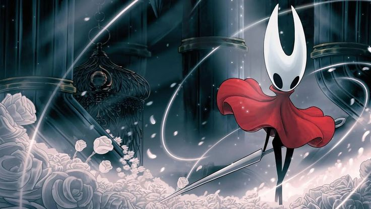

Hornet!

Hornet es conocida como la "Protectora de las Ruinas de Hallownest". A diferencia del Caballero (protagonista), ella tiene voluntad propia y puede hablar.
Hija del Rey Pálido (monarca de Hallownest) y Herrah la Bestia (reina de Nido Profundo). Es una criatura única; posee la sangre real de los Wyrms y la herencia de las arañas y tejedoras. Severa, ágil y guardiana de los secretos de su reino. No es una villana, sino una prueba para ver si el Caballero es capaz de salvar el mundo.
Su nacimiento fue parte de una negociación. Herrah aceptó convertirse en Soñadora para sellar la Infección solo si el Rey Pálido le daba una hija.
Combate y habilidades
Arma: Una Aguja de Tejedora gigante que usa como espada o lanza.
Seda: Utiliza hilos para atrapar enemigos, crear trampas de pinchos o desplazarse por el aire.
Grito de batalla: Sus famosos gritos como "¡SHAW!", "¡EDINO!" y "¡ADILO!" son ya una marca registrada de la comunidad.
Encuentros: El jugador la enfrenta dos veces: una en Sendero Verde (donde te pone a prueba) y otra en Límite del Reino (donde reconoce tu valía).